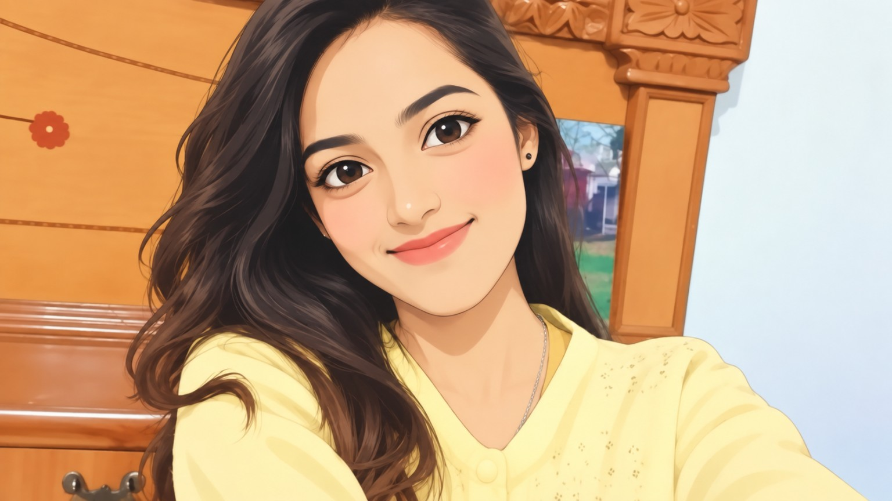

DORA
Install app
Idle

Tap the mic and speak, or type below.
➤
What's today's date and time?
Tell me a short story
Draft a professional email
How are you, Dora?
SETTINGS
Voice language
Hindi / Hinglish
English (India)
English (US)
Spoken replies
Wake word "Hey Dora"
Voice
Test voice
Replace image
Remove image
Restore original
Clear chat
Voice uses the browser Web Speech API (best in Chrome or Edge). The wake word only works while this tab is open, because browsers do not allow background listening. Dora cannot set reminders, search the web or check live weather yet.